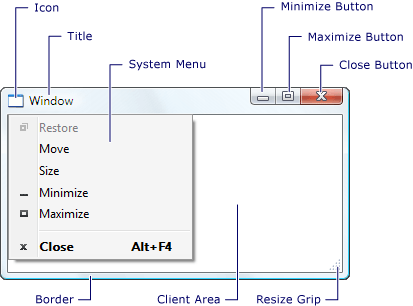
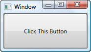
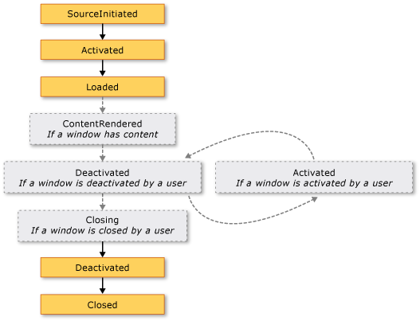
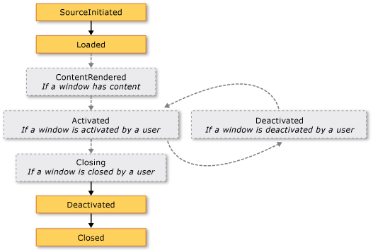
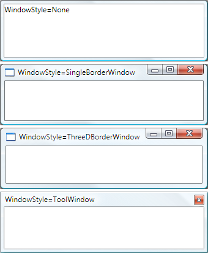
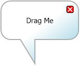
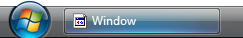

Общие сведения об окнах WPF
Пользователи взаимодействуют с Windows Presentation Foundation (WPF) автономных приложений с помощью windows. Основная цель окна — разместить содержимое, которое визуализирует данные и позволяет пользователям взаимодействовать с ними. Автономный WPF приложения предоставляют собственные окна с помощью Window класса. В данном разделе представлены Window затем освещаются основы создания и управления окнами в автономных приложениях.
Note
Браузерные WPF приложений, включая XAML-приложения браузера (XBAP) и свободные XAML страниц, не предоставляют собственных окон. Вместо этого они размещаются в окнах, предоставляемых Windows Internet Explorer. См. в разделе Общие сведения о приложениях браузера WPF XAML.
Класс окна
На следующем рисунке показана составляющие части окна:

Окно разделено на две области: неклиентскую и клиентскую.
Неклиентской области окна реализуется WPF и включает части окна, которые являются общими для большинства окон, включая следующие:
Граница.
Заголовок окна.
Значок.
Кнопки "Свернуть", "Развернуть" и "Восстановить".
Кнопка "Закрыть".
Системное меню с элементами, которые позволяют пользователям свернуть, развернуть, восстановить, перемещать, изменять размеры и закрыть окно.
Клиентской области окна находится внутри неклиентской области окна и используется разработчиками для добавления содержимого конкретного приложения, такие как строки меню, панелей инструментов и элементов управления.
В WPF, окно инкапсулируется Window класс, который используется для следующих целей:
Отобразить окно.
Настроить размер, положение и внешний вид окна.
Разместить содержимое конкретного приложения.
Управлять временем существования окна.
Реализация окна
Реализация типичного окна включает внешний вид и поведение, где внешний вид определяет, как окно отображается для пользователей и поведение определяет функционирование окна при взаимодействии пользователей с ним. В WPF, вы можете реализовать внешний вид и поведение окна с помощью кода, либо или XAML разметки.
Как правило, тем не менее, внешний вид окна реализуется с помощью XAML разметки, а его поведение реализуется с помощью кода программной части, как показано в следующем примере.
<Window
xmlns="http://schemas.microsoft.com/winfx/2006/xaml/presentation"
xmlns:x="http://schemas.microsoft.com/winfx/2006/xaml"
x:Class="SDKSample.MarkupAndCodeBehindWindow">
<!-- Client area (for content) -->
</Window>
using System.Windows;
namespace SDKSample
{
public partial class MarkupAndCodeBehindWindow : Window
{
public MarkupAndCodeBehindWindow()
{
InitializeComponent();
}
}
}
Чтобы включить XAML файла разметки и файл с выделенным кодом для совместной работы, необходимо выполнение следующих условий:
В разметке
Windowэлемент должен включатьx:Classатрибута. При построении приложения существованиеx:Classв разметке вызывает файл Microsoft Build Engine (MSBuild) для созданияpartialкласс, производный от Window и имеет имя, которое задается параметромx:Classатрибута. Это требует добавления параметра XML объявление пространства имен для XAML схемы (xmlns:x="http://schemas.microsoft.com/winfx/2006/xaml"). Созданныйpartialкласс реализуетInitializeComponentметод, который вызывается для регистрации событий и задания свойств, реализованных в разметке.В коде программной части класс должен быть
partialкласс с тем же именем, который задается параметромx:Classатрибут в разметке и он должен быть производным от Window. Это позволяет файл кода должно быть связано сpartialкласса, созданного для файла разметки при построении приложения (см. в разделе построение приложения WPF).В коде программной части Window класс должен реализовывать конструктор, который вызывает
InitializeComponentметод.InitializeComponentреализуется разметки созданным файломpartialкласс для регистрации событий и задания свойств, которые определены в разметке.
Note
При добавлении нового Window в проект с помощью Microsoft Visual Studio, Window реализуется с помощью разметки и кода и включает необходимую конфигурацию для создания связи между файлами разметки и кода как описанные здесь.
При такой конфигурации можно сосредоточиться на определении внешнего вида окна в XAML разметки и реализации его поведения в коде. В следующем примере показано окно с кнопкой, реализованной в XAML разметки и обработчик событий для кнопки Click событий, реализован в коде.
<Window
xmlns="http://schemas.microsoft.com/winfx/2006/xaml/presentation"
xmlns:x="http://schemas.microsoft.com/winfx/2006/xaml"
x:Class="SDKSample.MarkupAndCodeBehindWindow">
<!-- Client area (for content) -->
<Button Click="button_Click">Click This Button</Button>
</Window>
using System.Windows;
namespace SDKSample
{
public partial class MarkupAndCodeBehindWindow : Window
{
public MarkupAndCodeBehindWindow()
{
InitializeComponent();
}
void button_Click(object sender, RoutedEventArgs e)
{
MessageBox.Show("Button was clicked.");
}
}
}
Настройка определения окна для MSBuild
Реализация окна определяет его конфигурацию для MSBuild. Для окна, которое определяется с помощью XAML разметки и кода:
XAML файлы разметки настраиваются как MSBuild
Pageэлементов.Файлы кода программной части настраиваются как MSBuild
Compileэлементов.
Это показано в следующем MSBuild файл проекта.
<Project ...
xmlns="http://schemas.microsoft.com/developer/msbuild/2003">
...
<Page Include="MarkupAndCodeBehindWindow.xaml" />
<Compile Include=" MarkupAndCodeBehindWindow.xaml.cs" />
...
</Project>
Сведения о построении WPF приложений, см. в разделе построение приложения WPF.
Время существования окна
Как и любой класс, окно имеет время существования, которое начинается с момента создания его экземпляра, после чего оно открывается, активируется, деактивируется и, в конечном счете, закрывается.
Открытие окна
Чтобы открыть окно, сначала создайте его экземпляр, как показано в следующем примере.
<Application
xmlns="http://schemas.microsoft.com/winfx/2006/xaml/presentation"
xmlns:x="http://schemas.microsoft.com/winfx/2006/xaml"
x:Class="SDKSample.App"
Startup="app_Startup">
</Application>
using System.Windows;
namespace SDKSample
{
public partial class App : Application
{
void app_Startup(object sender, StartupEventArgs e)
{
// Create a window
MarkupAndCodeBehindWindow window = new MarkupAndCodeBehindWindow();
// Open a window
window.Show();
}
}
}
В этом примере MarkupAndCodeBehindWindow создается при запуске приложения, который происходит при Startup события.
При создании экземпляра окна, ссылку на него автоматически добавляется в список windows под управлением Application объекта (см. в разделе Application.Windows). Кроме того, первое окно для создания экземпляра по умолчанию задается Application как главное окно приложения (см. в разделе Application.MainWindow).
Наконец, открывается окно путем вызова Show метода; результат показан на рисунке ниже.

Окно, которое открывается путем вызова Show безрежимным окном, это означает, что приложение работает в режиме, который позволяет пользователям активировать и другие окна в одном приложении.
Note
ShowDialog вызывается для открытия окна, такие как диалоговые окна в модальном режиме. См. в разделе Общие сведения о полях диалогового окна Дополнительные сведения.
Когда Show является именем, окно выполняет работу по инициализации, перед его отображением Чтобы установить инфраструктуру, которая позволяет принимать ввод данных пользователем. При инициализации окна SourceInitialized события и отображения окна.
Для быстрого вызова StartupUri можно задать, чтобы указать первое окно, которое открывается автоматически при запуске приложения.
<Application
xmlns="http://schemas.microsoft.com/winfx/2006/xaml/presentation"
xmlns:x="http://schemas.microsoft.com/winfx/2006/xaml"
x:Class="SDKSample.App"
StartupUri="PlainWindow.xaml" />
При запуске приложения окном, заданным параметром значение StartupUri открывается немодальном режиме; внутри окно открывается путем вызова его Show метод.
Владение окном
Окно, которое открывается с помощью Show метод не имеет неявной связи с окном, которое он создан; пользователи могут взаимодействовать с любым из окон независимо от другого, это означает, что любое окно может выполнять следующее:
Перекрывать другое (если только одно из окон не имеет его Topmost свойство значение
true).Сворачиваться, разворачиваться и восстанавливаться без влияния на другое окно.
Для некоторых окон требуется связь с окном, которое их открывает. Например Интегрированная среда разработки (IDE) приложение может открывать окна свойств и окна инструментов, типичное поведение которых перекрыть окно, которое их создает. Кроме того, такие окна должны всегда закрываться, сворачиваться, разворачиваться и восстанавливаться вместе с окном, которое их создало. Такую связь можно установить, сделав одно окно собственные другой и можно сделать путем установки Owner свойство собственного окна со ссылкой на владельца окно. Эти действия показаны в следующем примере.
// Create a window and make this window its owner
Window ownedWindow = new Window();
ownedWindow.Owner = this;
ownedWindow.Show();
После установки владения:
Окно во владении может ссылаться на окно-владелец, проверяя значение его Owner свойство.
Окно-владелец может обнаруживать все окна, окна, проверив значение его OwnedWindows свойство.
Предотвращение активации окна
Существуют сценарии, где windows не должны активироваться при отображении, например диалог windows messenger стиле интернет-приложения или окна уведомлений приложения электронной почты.
Если приложение содержит окно, которое не должно активироваться при отображении, можно задать его ShowActivated свойства false перед вызовом Show метода в первый раз. Результат:
Окно не активируется.
Окна Activated событие не происходит.
Текущее активированное окно останется активным.
Однако окно активируется, если пользователь щелкнет его неклиентскую или клиентскую область. В этом случае:
Окно активируется.
Окна Activated события.
Ранее активированное окно деактивируется.
Окна Deactivated и Activated вызываются события в ответ на действия пользователя.
Активация окна
При первом открытии окна оно становится активным (если он отображается с ShowActivated присвоено false). Активного окна — это окно, в настоящий момент захватывает входные данные пользователя, например нажатий клавиш и щелчки мышью. Когда окно становится активным, он выдает Activated событий.
Note
При первом открытии окна Loaded и ContentRendered события вызываются после Activated события. С учетом этого окно может считаться открытым при ContentRendered возникает.
После активизации окна пользователь может активировать другое окно в том же приложении или активировать другое приложение. В этом случае текущее активное окно становится неактивным и вызывает Deactivated событий. Аналогично, когда пользователь выбирает неактивное окно, окно снова становится активным и Activated возникает.
Одна из основных причин для обработки Activated и Deactivated — для включения и отключения функций, которые могут выполняться только при активном окне. Например, некоторые окна отображают интерактивное содержимое, которое требует постоянного ввода данных или внимания пользователя, включая игры и видеопроигрыватели. Ниже приведен упрощенный видеопроигрыватель, демонстрирующий способ обработки Activated и Deactivated для реализации такого поведения.
<Window
xmlns="http://schemas.microsoft.com/winfx/2006/xaml/presentation"
xmlns:x="http://schemas.microsoft.com/winfx/2006/xaml"
x:Class="SDKSample.CustomMediaPlayerWindow"
Activated="window_Activated"
Deactivated="window_Deactivated">
<!-- Media Player -->
<MediaElement
Name="mediaElement"
Stretch="Fill"
LoadedBehavior="Manual"
Source="numbers.wmv" />
</Window>
using System;
using System.Windows;
namespace SDKSample
{
public partial class CustomMediaPlayerWindow : Window
{
public CustomMediaPlayerWindow()
{
InitializeComponent();
}
void window_Activated(object sender, EventArgs e)
{
// Recommence playing media if window is activated
this.mediaElement.Play();
}
void window_Deactivated(object sender, EventArgs e)
{
// Pause playing if media is being played and window is deactivated
this.mediaElement.Pause();
}
}
}
Другие типы приложений могут выполнять код в фоновом режиме, когда окно деактивировано. Например, почтовый клиент может продолжать опрашивать почтовый сервер, пока пользователь работает с другими приложениями. Такие приложения часто обеспечивают другое или дополнительное поведение, когда главное окно не активно. В случае почтовой программы это может означать как добавление нового почтового элемента в папку "Входящие", так и добавление значка уведомления на панель задач. Значок уведомления требуется отображать, только если почтовое окно неактивно, что можно определить, проверив IsActive свойство.
Если фоновая задача завершается, окно может потребоваться более срочном уведомлять пользователя, вызвав Activate метод. Если пользователь взаимодействует с другое приложение активируется, когда Activate вызове кнопке панели задач окна мигает. Если пользователь взаимодействует с текущим приложением, вызов метода Activate перенесет окно на передний план.
Note
Можно обрабатывать активацию области приложения с помощью Application.Activated и Application.Deactivated события.
Закрытие окна
Время существования окна заканчивается, когда пользователь его закрывает. Окно может быть закрыто с помощью элементов в неклиентской области, включая следующие:
Закрыть элемент системы меню.
Нажатие клавиш ALT+F4.
Нажав клавишу закрыть кнопки.
Можно указать дополнительные способы закрытия окна для клиентской области, к наиболее типичным из которых относятся следующие:
Выхода элемент файл меню, обычно для главных окон приложений.
Объект закрыть элемент файл меню, обычно для вторичных окон приложений.
Объект отменить кнопка, обычно для модального диалогового окна.
Объект закрыть кнопка, обычно для немодального диалогового окна.
Чтобы закрыть окно в ответ на один из этих пользовательских механизмов, необходимо вызвать Close метод. В следующем примере реализуется возможность закрытия окна, выбрав выхода на файл меню.
<Window
xmlns="http://schemas.microsoft.com/winfx/2006/xaml/presentation"
xmlns:x="http://schemas.microsoft.com/winfx/2006/xaml"
x:Class="SDKSample.WindowWithFileExit">
<Menu>
<MenuItem Header="_File">
<MenuItem Header="E_xit" Click="fileExitMenuItem_Click" />
</MenuItem>
</Menu>
</Window>
using System.Windows;
namespace SDKSample
{
public partial class WindowWithFileExit : System.Windows.Window
{
public WindowWithFileExit()
{
InitializeComponent();
}
void fileExitMenuItem_Click(object sender, RoutedEventArgs e)
{
// Close this window
this.Close();
}
}
}
При закрытии окно вызывает два события: Closing и Closed.
Closing Возникает перед закрытием окна и предоставляет механизм, с помощью окно, которое может быть прервано замыкания. Одна из распространенных причин, препятствующих закрытию окна, заключается в том, что содержимое окна содержит измененные данные. В этом случае Closing событие можно обработать для определения данных является "грязным" и, таким образом, чтобы запрашивать у пользователя, следует ли закрыть окно без сохранения данных или отменить закрытие окна. В следующем примере показано ключевые аспекты обработки Closing.
using System; // EventArgs
using System.ComponentModel; // CancelEventArgs
using System.Windows; // window
namespace CSharp
{
public partial class DataWindow : Window
{
// Is data dirty
bool isDataDirty = false;
public DataWindow()
{
InitializeComponent();
}
void documentTextBox_TextChanged(object sender, EventArgs e)
{
this.isDataDirty = true;
}
void DataWindow_Closing(object sender, CancelEventArgs e)
{
MessageBox.Show("Closing called");
// If data is dirty, notify user and ask for a response
if (this.isDataDirty)
{
string msg = "Data is dirty. Close without saving?";
MessageBoxResult result =
MessageBox.Show(
msg,
"Data App",
MessageBoxButton.YesNo,
MessageBoxImage.Warning);
if (result == MessageBoxResult.No)
{
// If user doesn't want to close, cancel closure
e.Cancel = true;
}
}
}
}
}
Closing Обработчику события передаются CancelEventArgs, который реализует BooleanCancel задание для свойства true для предотвращения закрытия окна.
Если Closing не обрабатывается или обрабатывается, но не отменено, оно будет закрыто. Непосредственно перед фактическим закрытием окна Closed возникает. На этом этапе невозможно предотвратить закрытие окна.
Note
Приложение можно настроить таким образом, чтобы завершить работу автоматически при любом закрытии главного окна приложения (см. в разделе MainWindow) или закрытии последнего окна. Дополнительные сведения см. в разделе ShutdownMode.
Хотя окно может быть явно закрыто с помощью механизмов, предоставляемых в неклиентской и клиентской областях, окно может быть неявно Закрыто в результате поведения в других частях приложения или Windows, включая следующие:
Пользователь выходит из системы или завершает работу Windows.
Закрывается владелец окна (см. в разделе Owner).
Закрывается главное окно приложения и ShutdownMode является OnMainWindowClose.
Shutdown вызывается.
Note
После закрытия окно нельзя открыть повторно.
События времени существования окна
Ниже показана последовательность основных событий во время существования окна:

Ниже показана последовательность основных событий во время существования окна, которое отображается без активации (ShowActivated присваивается false перед отображением окна):

Расположение окна
Когда окно открыто, оно располагается в координатах x и y относительно рабочего стола. Это расположение можно определить, проверив Left и Top свойства, соответственно. Можно задать эти свойства, чтобы изменить расположение окна.
Можно также указать начальное расположение Window при его первом отображении, установив WindowStartupLocation свойство с одним из следующих WindowStartupLocation значений перечисления:
CenterOwner (по умолчанию)
Если начальное расположение указано как Manualи Left и Top свойства не задано, Window появится запрос Windows расположения в.
Окна верхнего уровня и Z-порядок
Помимо расположения в координатах x и y, окно имеет координату по оси z, которая определяет его вертикальную позицию относительно других окон. Это называется z-порядком окна. Существует два типа: обычный z-порядок и верхний z-порядок. Расположение окна в обычном z порядке определяется, является ли активной или нет. По умолчанию окно находится в обычном z-порядке. Расположение окна в верхнем z порядке также определяется, является ли активной или нет. Кроме того, окна в самом верхнем z-порядке всегда расположены над окнами в обычном z-порядке. Окно располагается в верхнем z порядке, задав его Topmost свойства true.
<Window
xmlns="http://schemas.microsoft.com/winfx/2006/xaml/presentation"
Topmost="True">
</Window>
В каждом z-порядке активное в данный момент окно появляется поверх всех других окон в том же z-порядке.
Размер окна
Помимо расположения на рабочем столе, окно имеет размер, определяемый несколькими свойствами, включая различные свойства ширины и высоты и SizeToContent.
MinWidth, Width, и MaxWidth используются для управления диапазоном ширины окна во время существования, которые настраиваются, как показано в следующем примере.
<Window
xmlns="http://schemas.microsoft.com/winfx/2006/xaml/presentation"
MinWidth="300" Width="400" MaxWidth="500">
</Window>
Высота окна управляется MinHeight, Height, и MaxHeightи настроены, как показано в следующем примере.
<Window
xmlns="http://schemas.microsoft.com/winfx/2006/xaml/presentation"
MinHeight="300" Height="400" MaxHeight="500">
</Window>
Так как различные значения ширины и высоты определяют диапазон, то что ширина и высота изменяемого окна могут находиться в любом месте указанного диапазона для соответствующего измерения. Чтобы определить текущую ширину и высоту, проверьте ActualWidth и ActualHeight, соответственно.
Если вы хотите, ширину и высоту окна будет иметь размер, соответствующий размер окна содержимого, можно использовать SizeToContent свойство, которое имеет следующие значения:
Manual. Нет эффекта (по умолчанию).
Width. Ширине содержимого, который имеет тот же эффект, что и установка MinWidth и MaxWidth по ширине содержимого.
Height. Высоте содержимого, который имеет тот же эффект, что и установка MinHeight и MaxHeight по высоте содержимого.
WidthAndHeight. По размеру содержимого ширину и высоту, которая имеет тот же эффект, что и установка MinHeight и MaxHeight равными высоте содержимого, а оба MinWidth и MaxWidth по ширине содержимого.
В следующем примере показано окно, размеры которого автоматически устанавливаются равными его содержимому по вертикали и по горизонтали при первом отображении.
<Window
xmlns="http://schemas.microsoft.com/winfx/2006/xaml/presentation"
SizeToContent="WidthAndHeight">
</Window>
В следующем примере показано, как задать SizeToContent свойства в коде, чтобы указать, как размер окна изменяется в соответствии с содержимым.
// Manually alter window height and width
this.SizeToContent = SizeToContent.Manual;
// Automatically resize width relative to content
this.SizeToContent = SizeToContent.Width;
// Automatically resize height relative to content
this.SizeToContent = SizeToContent.Height;
// Automatically resize height and width relative to content
this.SizeToContent = SizeToContent.WidthAndHeight;
Порядок приоритета для свойств размера
Различные свойства размеров окна объединяются для определения диапазона ширины и высоты окна изменяемого размера. Чтобы обеспечить сохранение допустимого диапазона, Window вычисляет значения свойств размера, с использованием следующего порядка приоритета.
Для свойств высоты:
Для свойств ширины:
Очередность выполнения также можно определить размер окна, когда она развернута, который управляется с помощью WindowState свойство.
Состояние окна
В течение времени существования окна изменяемого размера оно может иметь три состояния: обычное, свернутое и развернутое. Окно с обычный состояние является состоянием окна по умолчанию. Окно с этим состоянием позволяет пользователю перемещать его и изменять размер, используя захват для изменения размера или границу.
Окно с сведены к минимуму состоянием сворачивается в кнопке панели задач, если ShowInTaskbar присваивается true; в противном случае оно сворачивается до наименьшего возможного размера оно может быть и размещается в левом нижнем углу рабочего стола. Ни один из типов свернутого окна не может быть изменен с помощью границы или захвата для изменения размера, хотя свернутое окно, которое не отображается на панели задач, можно перетаскивать на рабочем столе.
Окно с в развернутом состоянии состоянием расширяется до максимального размера, который определяется размером до его MaxWidth, MaxHeight, и SizeToContent свойствами. Как и для свернутого окна, размер развернутого окна нельзя изменить с помощью захвата для изменения размера или перетаскивания границы.
Note
Значения Top, Left, Width, и Height свойства окна всегда представляют значения для обычного состояния, даже в том случае, если окно свернуто или развернуто в настоящее время.
Состояние окна можно настроить, задав его WindowState свойство, которое может иметь одно из следующих WindowState значений перечисления:
В следующем примере показано создание окна, которое отображается развернутым при его открытии.
<Window
xmlns="http://schemas.microsoft.com/winfx/2006/xaml/presentation"
WindowState="Maximized">
</Window>
Как правило, следует задать WindowState для настройки начального состояния окна. После отображения окна изменяемого размера пользователи могут нажимать кнопки свертывания, развертывания и восстановления на панели заголовка окна, чтобы изменить состояние окна.
Внешний вид окна
Можно изменить внешний вид клиентской области окна, добавляя в нее определенное содержимое, такое как кнопки, метки и текстовые поля. Для настройки неклиентской области, Window предоставляет несколько свойств, которые включают Icon для установки значка окна и Title для установки заголовка.
Можно также изменить внешний вид и поведение границы неклиентской области, настраивая режим изменения размера окна, стиль окна и отображение в виде кнопки на панели задач рабочего стола.
Режим изменения размера
В зависимости от WindowStyle свойство, можно управлять как (и нужно ли) пользователь может изменять размер окна. Выбор стиля окна влияет ли пользователь изменять размер окна, перетаскивая его границу мышью, является ли свернуть, развернуть, и изменение размера кнопки отображаются в неклиентской области, и, если они отображаются, включены ли они.
Можно настроить изменение размера окна, задав его ResizeMode свойство, которое может принимать одно из следующих ResizeMode значений перечисления:
CanResize (по умолчанию)
Как и в WindowStyle, режим изменения размера окна редко изменяется во время существования, это означает, что вы скорее установим его из XAML разметки.
<Window
xmlns="http://schemas.microsoft.com/winfx/2006/xaml/presentation"
ResizeMode="CanResizeWithGrip">
</Window>
Обратите внимание, что можно определить, является ли окно развернуто, свернуто или восстановлено, проверяя WindowState свойство.
Стиль окна
Граница, предоставляемая из неклиентской области окна, подходит для большинства приложений. Однако существуют ситуации, когда требуются различные типы границ либо границы вовсе не требуются, в зависимости от типа окна.
Для управления типом границы окна, установите его WindowStyle свойство с одним из следующих значений WindowStyle перечисления:
SingleBorderWindow (по умолчанию)
На следующем рисунке показаны последствия этих стилей окон:

Можно задать WindowStyle одним XAML разметки или кода; так как это редко изменяется во время существования окна, то скорее задать его с помощью XAML разметки.
<Window
xmlns="http://schemas.microsoft.com/winfx/2006/xaml/presentation"
WindowStyle="ToolWindow">
</Window>
Непрямоугольный стиль окна
Существуют также ситуации, где стилей границ, предоставляемых WindowStyle позволяет вам потребуется недостаточно. Например, вы можете создать приложение с непрямоугольной границей, таких как Проигрыватель Windows Media (Microsoft) использует.
Например рассмотрим речи пузырьковой окно, показанное на следующем рисунке:

Этот тип окна можно создать, задав WindowStyle свойства Noneи с помощью специальной поддержки, Window прозрачности.
<Window
xmlns="http://schemas.microsoft.com/winfx/2006/xaml/presentation"
WindowStyle="None"
AllowsTransparency="True"
Background="Transparent">
</Window>
Это сочетание значений указывает, что окно отрисовывается полностью прозрачным. В этом состоянии нельзя использовать элементы оформления неклиентской области окна (кнопки "Закрыть", "Минимизировать", "Развернуть" и "Восстановить" и т. д.). Следовательно, необходимо предоставить свои собственные элементы.
Наличие панели задач
По умолчанию внешний вид окна включает кнопку панели задач, как показано на следующем рисунке:

Некоторые типы окон не имеют кнопки панели задач, таких как окна сообщений и диалоговые окна (см. в разделе Общие сведения о полях диалогового окна). Вы можете управлять, отображаются ли кнопки панели задач для окна, задав ShowInTaskbar свойство (true по умолчанию).
<Window
xmlns="http://schemas.microsoft.com/winfx/2006/xaml/presentation"
ShowInTaskbar="False">
</Window>
Вопросы безопасности
Window требуется UnmanagedCode создания разрешения безопасности. Для приложений, установленных и запускаемых с локального компьютера, это включено в набор разрешений, предоставленных приложению.
Однако это выходит за рамки набора разрешений для приложений, запущенных из Интернета или локальной интрасети с помощью ClickOnce. Следовательно, пользователи будут получать ClickOnce предупреждение системы безопасности и должны будут повысить набор разрешений для приложения до полного доверия.
Кроме того XBAP не может отображать окна или диалоговые окна по умолчанию. Обсуждение безопасности автономных приложений, см. в разделе стратегия безопасности WPF — безопасность платформы.
Другие типы окон
NavigationWindow — Это окно, предназначенное для предоставления навигации по содержимому. Дополнительные сведения см. в разделе Общие сведения о переходах).
Диалоговые окна — это окна, которые часто используются для сбора информации от пользователя для выполнения функции. Например, когда пользователь хочет открыть файл, открыть файл диалоговое окно обычно отображается в приложении, чтобы получить имя файла от пользователя. Дополнительные сведения см. в разделе Общие сведения о диалоговых окнах.